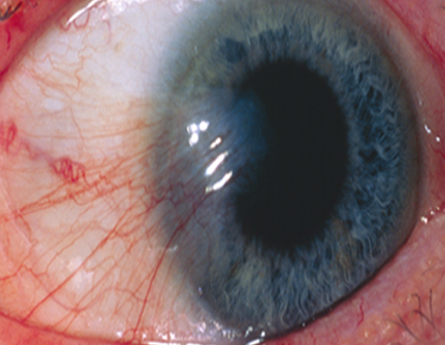
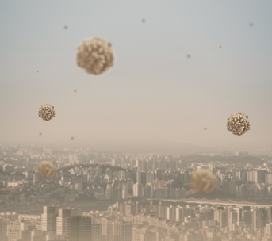

안질환
익상편
익상편(군날개)
증상을 분석하고 정확한
원인 진단
을 통해 치료합니다.
익상편(군날개)
이란?
시력장애가 발생하는 질환
적절한 치료가 중요합니다.

결막변성으로 인하여 눈동자를
가리는 시력장애가 발생하는 질환
익상편은 결막변성으로 눈의 안쪽 결막에서부터
각막쪽으로
풍부한 섬유조직이 삼각형 모양으로 자라는 질환
입니다.
섬유조직이 눈동자를 가리면서 시력장애 또는 난시를
일으키기도 합니다.
익상편
발생 원인
유전적인 요인과 환경적인 요인
에 의해 발생한다고 합니다.
자외선 노출

먼지
건조한 공기
익상편 주요 증상
익상편은
시력에 영향을 미치는 경우가 거의 없기
때문에 치료가 필요하지
않지만 미용상보기 좋지 않을 경우에는 안과에서 제거합니다.
난시를 유발합니다.
시력이 감퇴하기도 합니다.
충혈 , 자극, 이물감, 눈부심이 있습니다.
병변이 크면 안구 운동 장애 및 복시 현상이 생깁니다.
익상편 주요 특징
익상편은 작을 때에는 증상이 미미
하기 때문에 치료하지 않다가
눈에 보일 정도로 나쁘거나 증상이 나타나면 안과에 찾는 경우가 많습니다.
증상이 특별히 크게 없다.
장기간 동안 천천히 자라난다.
흰색 병변이 검은 눈동자를 가린다.
가끔 염증으로 인해 충혈 또는 따가움이 발생한다.
병변이 점점 커지면서 동공을 가리면 시력장애 발생한다.
익상편 치료방법
익상편은 초기에는 특별한 치료가 필요가 없으나
수년간 걸쳐 병변이
커진다면 약물 또는 수술적인 치료
가 필요합니다.
안약치료
치료가 필요 없으나 이물감 또는 자극이 있는 경우
윤활제 역할을 하는 인공누액점안 을 처방합니다.
약물치료
자라는 속도가 빠르면 혈관수축제, 비스테로이드
항염제, 또는 스테로이드제 등의 염증조절제를
사용하여 치료를 합니다.